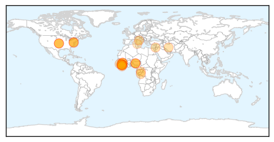
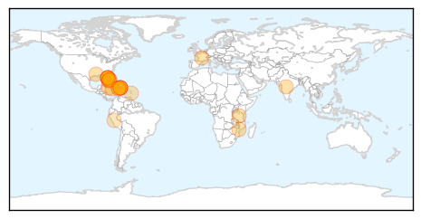
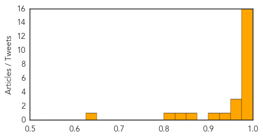

Ebola
30-Day Web Trend
8 alerts, 17 warnings

30-Day Twitter Trend
1 alerts, 1 warnings

Article Locations
Article Confidences

Top Articles:
- 1.000
- Fighting the Ebola outbreak in Sierra Leone
- 1.000
- UN Agency Steps Up Awareness On Ebola In West African
- 1.000
- UN agency warns of fruit bat risk in African Ebola epidemic
- 1.000
- FAO Warns Of Fruit Bat Risk In West Africa Ebola Epidemic
- 1.000
- Sierra Leone religious leaders criticise government handling of Ebola
- 1.000
- Liberian nurses contract Ebola after death of Ugandan doctor
- 0.999
- An old disease on a scary new rampage in West Africa
- 0.999
- Ebola virus disease, West Africa – update
- 0.999
- UPDATE 1-Sierra Leone religious leaders criticise government handling of Ebola
- 0.999
- 182 die from ebola in Guinea, says health officer
- 0.999
- Lurking for Years Before Outbreak?
- 0.999
- Sierra Leone religious leaders criticize government handling of Ebola
- 0.999
- Sierra Leone religious leaders criticise government handling of Ebola
- 0.996
- Canadian scientist hopes Ebola outbreak in West Africa is last without treatment
- 0.995
- UPDATE 1-Sierra Leone religious leaders criticise government handling of Ebola
- 0.994
- Ebola Virus Deadlier Than HIV/AIDS- Experts
- 0.984
- Ebola outbreak not hurting investment in Sierra Leone - foreign minister
- 0.980
- Police: Woman stabs man with screwdriver
- 0.980
- WEATHER BLOG: Summer Is Back
- 0.980
- Despite fighting, moving to Israel
- 0.980
- Baltimore youth have high aspirations for the stage
- 0.980
- Is There A Serial Killer Targeting Transgender Women In Baltimore City?
- 0.980
- Police find missing rower dead in Talbot County
- 0.959
- President Koroma Calls for International Support to fight Ebola
- 0.955
- Ebola Wreaks Economic Woe In West Africa
- 0.945
- Ebola outbreak not hurting investment in Sierra Leone: foreign minister
- 0.945
- Ebola outbreak not hurting investment in Sierra Leone: foreign minister
- 0.945
- Ebola outbreak not hurting investment in Sierra Leone: foreign minister
- 0.930
- An 'Overhappy' Survivor, A Guarded Forecast: Reporting On Ebola
- 0.744
- Awareness Times News Briefs from Sierra Leone
- 0.691
- Serious Lapses in Freetown ...as Ebola Suspect Escapes PCMH
Top Tweets:
-
No tweets found for Jul 21, 2014
Chikungunya
30-Day Web Trend
1 alerts, 0 warnings

30-Day Twitter Trend
3 alerts, 0 warnings

Article Locations
Article Confidences
Top Articles:
- 1.000
- Debilitating Tropical Infection Diagnosed in 3 Long Island Patients: Officials
- 0.999
- Chikungunya Reaches U.S.
- 0.999
- Three Chikungunya Mosquito-Borne Virus Cases Documented on Long Island : News : Headlines & Global News
- 0.999
- 2nd case of chikungunya fever in Manatee
- 0.999
- First Locally-Trasmitted Chikungunya Case Detected in US : Society : Chinatopix
- 0.999
- U.S. mosquitos spreading Chikungunya, the excruciatingly painful disease that tore through the Caribbean
- 0.998
- Caribbean travelers should reduce mosquito exposure
- 0.997
- Massachusetts reports new case of potentially deadly mosquito-borne virus only days after two people were confirmed to have contracted it in Florida
- 0.997
- Massachusetts reports new case of potentially deadly mosquito-borne virus only days after two people were confirmed to have contracted it in Florida
- 0.997
- First Locally Acquired Infection Reported in Fla.
- 0.996
- The Chikungunya Virus: Yet Another Reason To Dislike Mosquitoes
- 0.992
- Suspected 60,000 cases of tropical virus in Haiti
- 0.991
- 3 confirmed cases of chikungunya on Long Island
- 0.989
- First case detected locally of chikungunya virus
- 0.988
- Chikungunya cases spur strategic talks
- 0.982
- Tampa Bay Rays pitcher, Joel Peralta, may have contracted chikungunya in the Dominican Republic
- 0.974
- 20 people infected with Chikungunya virus from mosquitos, 3 on Long Island
- 0.973
- Health Ministry urges checks for travellers to chikungunya-affected countries
- 0.958
- Mississippi has 1 new cases of mosquito-borne virus
- 0.926
- Mississippi reports one new case of mosquito-borne chicungunya virus
- 0.923
- Mississippi has 1 new case of mosquito-borne virus
- 0.855
- PAHO's chikungunya count jumps 24%, to 442,000
- 0.831
- What effect does climate change have on the spread of disease?
- 0.812
- Untitled Article
- 0.627
- Peralta likely to be sidelined with flu-like symptoms
Top Tweets:
-
No tweets found for Jul 21, 2014